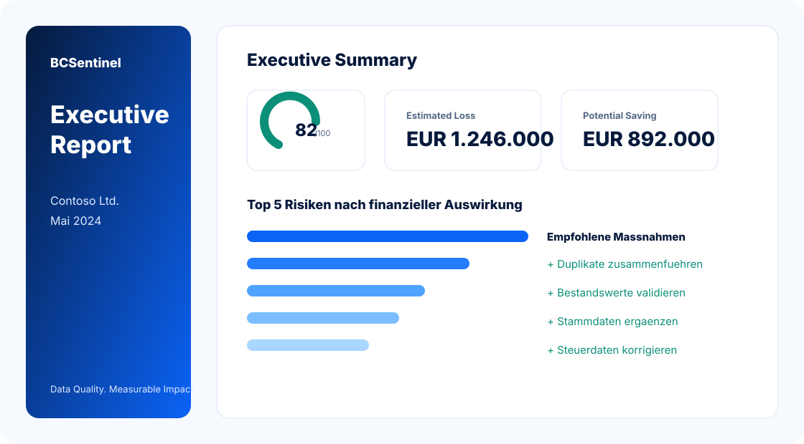

CFO
Finanziellen Impact erkennen.
Executive Reports
Unsere Executive Reports uebersetzen Datenqualitaet in businessrelevante Kennzahlen fuer Management, CFOs und Entscheider.

Finanziellen Impact erkennen.
Prioritaeten sicher entscheiden.
Datenprobleme strukturiert adressieren.
Governance und Zugriff absichern.
Prozessstoerungen sichtbar machen.
Komplexe Datenqualitaet auf Management-Ebene erklaert.
Konkrete Empfehlungen mit Priorisierung und Impact.
Basis fuer Budget, Cleanup und Monitoring.
PDF-Export fuer Meetings und Entscheider.
Sehen Sie selbst, wie ein Executive Report aufgebaut ist.